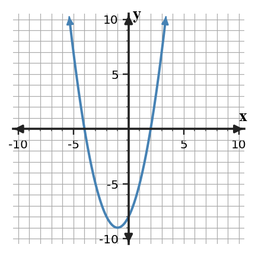

Start with what you can solve independently. Then find different classmates to compare reasoning or help with problems you have not completed. Record your own work and have each partner initial one problem they discussed with you.
For each phrase, identify the likely function family.
- Adds the same amount each step.
- Multiplies by the same factor each step.
- Has constant second differences.
- Has a turning point and symmetric output pattern.
For each context, choose linear, quadratic, or exponential and justify with the change pattern.
- A subscription adds 12 songs every week.
- A rumor reaches 3 times as many people each hour.
- The height of a thrown object follows a path with a maximum.
A student claims that $y=2x^2$ will always outgrow $y=2(2)^x$ because quadratics have an exponent of 2. Critique the claim using at least three input values and a conclusion about long-run behavior.
A school club wants to predict membership for the next 6 weeks. The first three counts are 40, 52, and 67.6.
Recommend either a linear or exponential model. Support your recommendation with calculations and explain one limitation.
Choose the expression equivalent to $9x^2-36$.
- $9(x+2)(x-2)$
- $(3x+6)(3x-6)$
- $9(x^2-4)$
- All of these are equivalent.
Explain your choice briefly.
Use signs to determine whether the square is $(x+7)^2$ or $(x-7)^2$: $x^2-14x+49$.
For each factored function, list the zeros.
- $y=(x-3)(x+5)$
- $y=2(x+1)(x-4)$
- $y=-(x-6)(x+2)$
Complete the table for $f(x)=(x-1)(x+3)$ and use it to identify the zeros.
| $x$ | $-3$ | $-2$ | $-1$ | $0$ | $1$ |
|---|---|---|---|---|---|
| $f(x)$ | _____ | _____ | _____ | _____ | _____ |
Write a factored equation for the graph shown, then expand it to standard form.

Use the blank coordinate plane to sketch $y=x^2+6x+8$ from its x-intercepts and vertex.

Analyze the structure of $kx^2+7x-6$. Find two possible integer values of $k$ that make the trinomial factorable over the integers, and explain how the product-sum structure changes.
Recommend a form for each task using the same quadratic $y=x^2-6x+5$: finding zeros, finding the minimum, and finding the y-intercept. Justify each recommendation with an equivalent form when helpful.
Solve $x^2-4x-1=0$ exactly.
Solve or interpret the quadratic situation for Completing the Square. Show the algebra that supports your answer.
Rewrite $y=x^2+2x+6$ in vertex form, then interpret the minimum.
Critique Error. Analyze the quadratic evidence for Choosing and Defending Solution Methods. Write a conclusion and justify it with algebraic or graphical evidence.
Identify the error, correct the solution, and explain how the structure shows the mistake.
Create With Constraints. Create or revise a quadratic task for Completing the Square using the constraints below.
- Include at least two representations among equation, table, graph, or context.
- Make the solution method visible from structure, not from a hint.
- Interpret the solution in words.
Use the provided graph as one representation. Create a quadratic with vertex $(5,60)$ that opens downward, write it in vertex and standard form, and explain how completing the square connects the two forms.